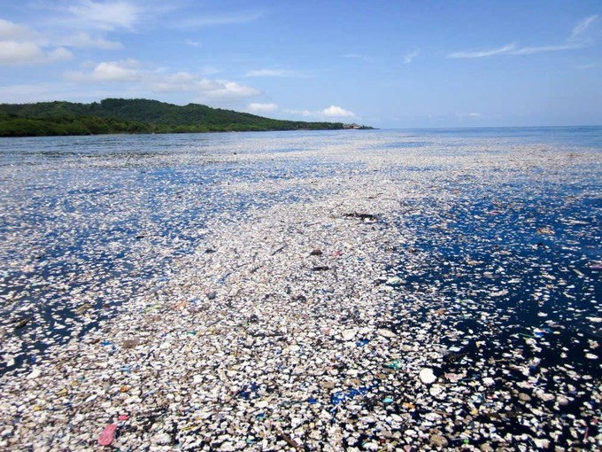
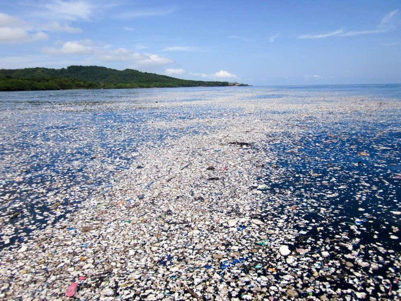
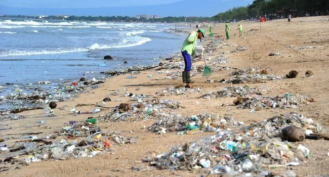
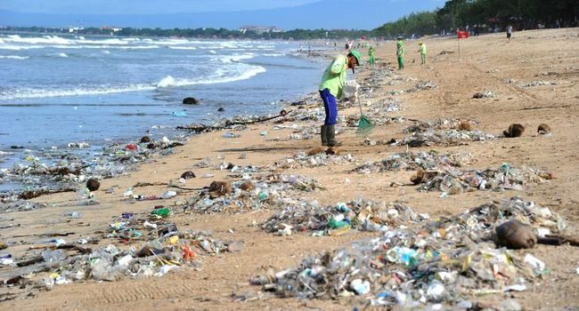
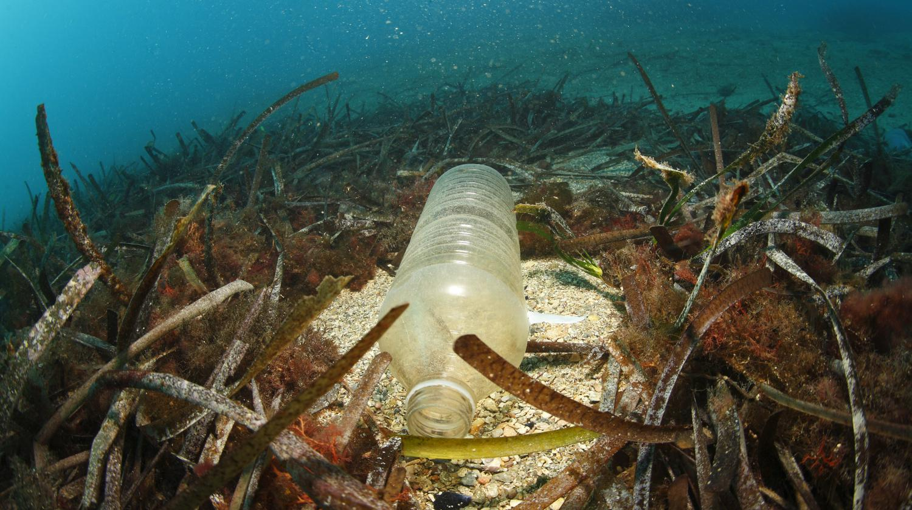
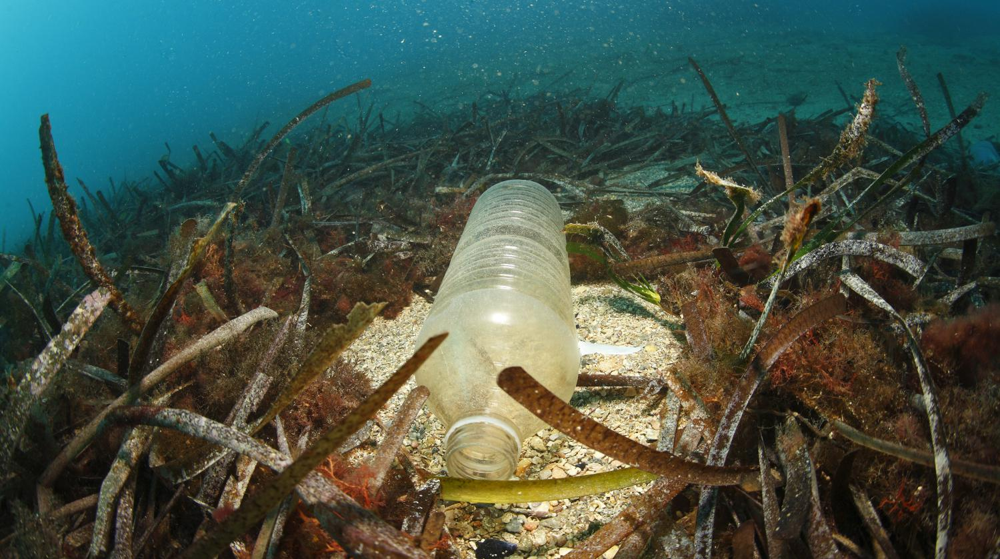

 

 



Le développement durable est l’idée que les sociétés humaines doivent vivre et répondre à leurs besoins sans compromettre la capacité des générations futures à répondre à leurs propres besoins. Concrètement, le développement durable est une façon d’organiser la société de manière à lui permettre d’exister sur le long terme. Cela implique de prendre en compte à la fois les impératifs présents mais aussi ceux du futur, comme la préservation de l’environnement et des ressources naturelles ou l’équité sociale et économique
Contrairement au développement économique, le développement durable est un développement qui prend en compte trois dimensions : économique, environnementale et sociale. Les trois piliers du développement durable qui sont traditionnellement utilisés pour le définir sont donc : l’économie, le social et l’environnement. La particularité du développement durable est de se situer au carrefour de ces 3 piliers. Face à la crise écologique et sociale qui se manifeste désormais de manière mondialisée (réchauffement climatique, raréfaction des ressources naturelles, pénuries d'eau douce, rapprochement du pic pétrolier, écarts entre pays développés et pays en développement, sécurité alimentaire, déforestation et perte drastique de biodiversité, croissance de la population mondiale, catastrophes naturelles et industrielles), le développement durable est une réponse de tous les acteurs (États, acteurs économiques, société civile), culturels et sociaux du développement.
Un septième continent, formé de déchets plastique : réalité alarmante ou exagération de langage ? Dévoilés dès les années 1990, ces amas de déchets, aussi appelés « îles flottantes », font régulièrement la Une des médias. Quels sont exactement ces déchets ? D'où viennent-ils ? Quelles sont les conséquences sur notre environnement ? Y a-t-il des solutions pour préserver l'avenir de nos océans ? Quelques chiffres représentatifs de la pollution des mers par pays en tonnes
| Pays | 2015 | 2016 | 2017 |
|---|---|---|---|
| Chine | 2 900 000 | 3 000 000 | 2 900 000 |
| Etats-Unis | 4 000 000 | 3 800 000 | 4 200 000 |
| Amerique du sud | 350 000 | 400 000 | 550 000 |
| Europe | 1 500 000 | 2 000 000 | 3 000 000 |
| TOTAL | 8 750 000 | 9 200 000 | 10 650 000 |